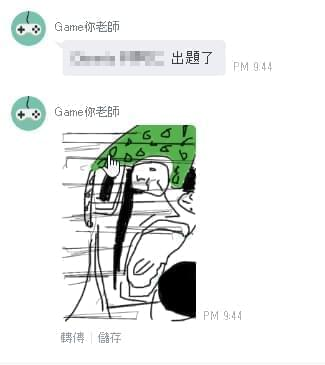

最近看到 LINE 發佈了「LIFF」，找找資料後發現了這篇文章「初探 LINE Message API 的新功能 LIFF」，看到對方做了 Painting 功能頓時覺得驚為天人，這個思路如果結合群組互動應該會非常有意思，下面就來看看我怎麼完成你畫我猜功能吧。
你畫我猜流程設計
- 使用者輸入
我想畫畫，機器人回覆相關繪畫模式按紐，點擊按鈕後開啟我們的 LIFF APP。 - 使用者於 LIFF APP 繪畫完畢後輸入解答，解答與圖片一起送至後端處理。
- 後端將圖片推送至群組內，並開始偵測收到的訊息是否吻合解答。
- 偵測到解答，推送遊戲答對者訊息，遊戲完畢。
開發畫畫功能
基本有很多開源的套件，我目前是使用這一款angular-canvas-painter，套用的方式也很簡單，大致上如下。
1 | <div pw-canvas options="{width: 400, height: 300, color: '#ff0'}"></div> |
成功的後你的 Canvas 現在應該可以畫畫了，接著再加入送出的程式碼，由於我們取得的圖片是 Base64 字串，所以直接跟題目包成 JSON 送就好了，送出成功後呼叫liff.closeWindow()關閉我們的 LIFF APP。
1 | var image = $scope.canvas.toDataURL(); |
畫面基本上隨你設計，看個人喜好，大致成果如下。
畫面完成後，就可以把頁面登錄到 LIFF 上了，這部分官網有詳細的教學，我這裡不多作介紹。
開發後端處理與推播訊息
在我的設計中遊戲是有開始與結束的，那我們勢必要記錄這個狀態，除此之外圖片也要保存起來，我這裡偷了個懶，直接把圖片存到 DB 去，大家自己找地方放，反正能讀出來就行。
1 | var drawGuess = new DrawGuessTable() |
由於 LINE API 傳送圖片只收連結，所以必須實做一個 Route 來返回圖檔。
1 | public IActionResult View(int id) |
推播訊息由於要打 API，較快捷的方法也是用套件，我個人使用這套line-bot-sdk-dotnet，接著簡單的使用裡面的 Push 方法，並且傳入我們剛寫好的圖片連結。
1 | public void PushGameStart(string groupId, string message, string imgId) |
沒意外的話，文字訊息與圖片會出現至聊天群組中。

接著開始判斷 webhook 接收到的訊息是否等於答案，若為是，則該局遊戲結束並推播訊息。
1 | private void CheckAnswer(ILineEvent evt, DrawGuessTable drawGuess, string userName) |
群組中的使用者們在一番激烈的競猜後(?)，系統公佈了最終勝利者。
程式完成後，這段時間群組中發生了許多爆笑的橋段，大家實在是太有創意了，哈哈。
心得
這次使用到的技術相對簡單，感覺還可以用 WebSocket 作一些更有趣的東西，例如即時連線遊戲什麼的，下次有空再來玩看看。